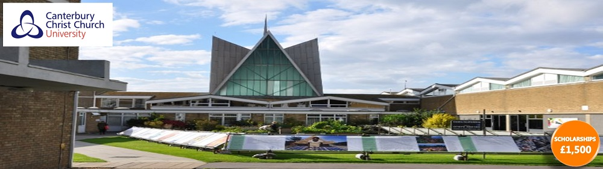

Acasă
Acasă Țări
Țări Catalog
Catalog Galerie foto
Galerie foto Experiente
Experiente Despre
DespreCanterbury Christ Church University



Descriere
Localizat la mai putin de jumatate de ora de Londra, Canterbury este un oras mic cu aproximativ 40-50 de mii de locuitori si doua universitati. Rezidentii se bucura de stilul modern de viata combinat cu farmecul medieval. Cea mai cunoscuta cladire din oras, Catedrala Canterbury, dateaza din secolul al XII-lea si este in prezent locuinta Arhiepiscopului Canterbury, cel mai inalt ierarh al bisericii Anglicane.
Canterbury Christ Church University este cel mai mare centru public de invatamant superior din sud-estul Marii Britanii. Universitatea este considerata a fi printre cele mai bune din tara pentru educatia initiala a cadrelor didactice, date obtinute in urma evaluarii realizate de OFSTED (Oficiul pentru Standarde in Educatie). Christ Church ofera, de asemenea, o gama larga de cursuri in domeniul artelor si stiintelor umaniste, precum si al stiintelor sociale si aplicate.
Structura programelor oferite de aceasta universitate permite studentilor sa combine stiinte diferite, numite joint honours, astfel obtinand o diploma ce cuprinde doua specializari distincte. Studentii care doresc sa studieze in primii ani o singura materie apoi sa adauge alte cursuri pot opta pentru programul Combined Degree. O alta oportunitate oferita de Universitatea Canterbury Christ Church o reprezinta posibilitatea de a include anul pregatitor la programul standard. Ceea ce inseamna ca studentii care nu indeplinesc cerintele de limba engleza pot opta pentru acest curs pregatitor care este sustinut de Imprumutul Studentesc, beneficiu care nu este oferit si de alte institutii.
Canterbury Christ Church dispune de campusuri moderne, facilitati tehnice, pentru care au primit si numeroase premii, cladiri sportive, asistenta si servicii excelente, propice pentru desfasurarea activitatii scolare la cel mai inalt nivel.
Informații generale
Tara: Marea Britanie
Limba de predare: engleza
Ani de studiu: Bachelor: 3-4; Master: 1-2
Inceput an: septembrie
Burse: Da
Campusuri: Canterbury, Broadstairs, Medway
Aeroporturi: Gatwick, Heathrow
Cazare: Taxe pentru 2018/2019: 118 - 195£ /saptaman
Programe de licență:
Accounting (at London South East Colleges)
Accounting and Finance
Accounting and Management
Accounting
Advertising